Co-op Mission Guide: Dead of Night
Chazington
Sections on this Page
Mission Summary
A rapid infestation has been discovered on one of the Dominion's fringe worlds. Burn down all of the infested structures before it has a chance to spread. At the Dead of Night, they will start to attack you.

Objectives
Primary Objective
- Destroy all infested structures (151)
Secondary Objective
- Destroy the Virophage
Enemy Base Analysis
Change all base analysis pictures to race:
Note that the images below show the starting state of the mission. As the mission progresses, Hybrids get added to enemy bases.
A camp is located to the West of the starting location. It is very lightly defended.
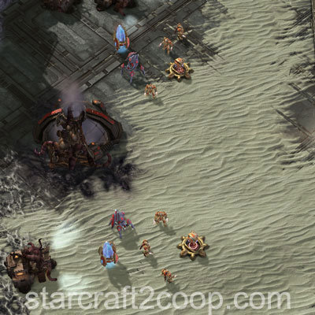
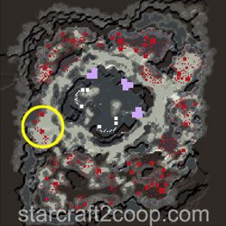
Clockwise from the above camp, a small enemy base is located. Linear calldowns are best used here to take advantage of all the enemies that are lined up.
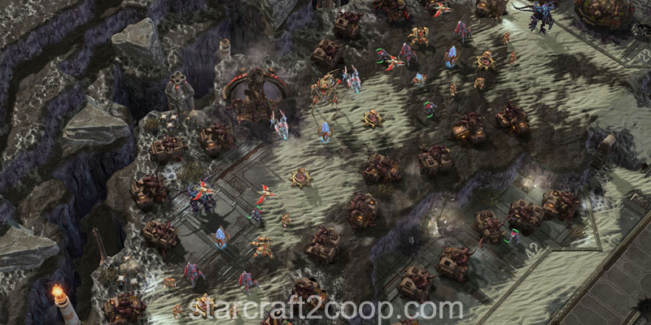
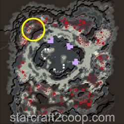
The enemy base at the North of the map is well-defended, and will need a reasonably-sized army to push into.
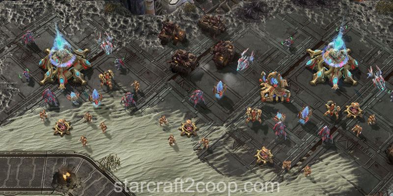
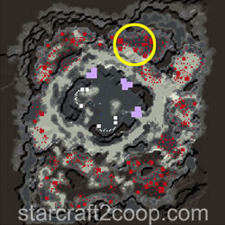
The enclave in the North East of the map is a great spot to use large Area of Effect calldowns like Pulse Cannon and Nukes.
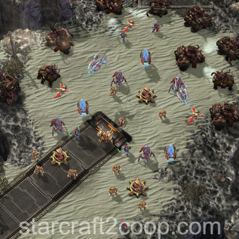
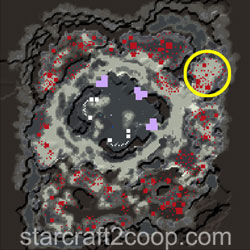
The enemy base at the East contains strong defenses, and will need a powerful army to push into.
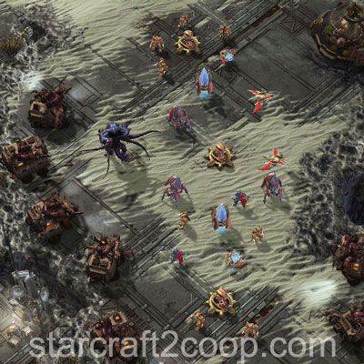
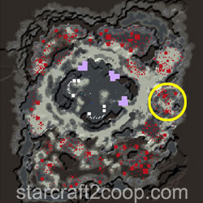
The South East base is the largest enemy base on the map. It contains several Hybrids and cloaked units.
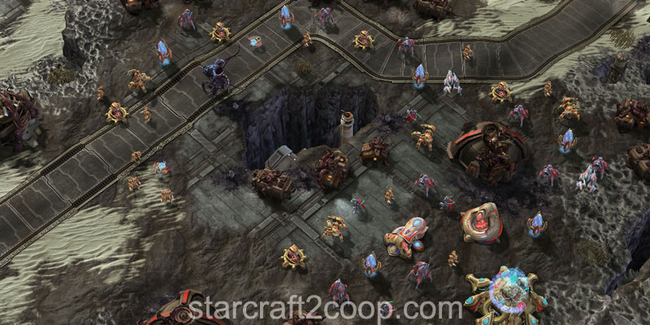
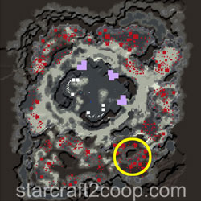
The South West area is covered by very lightly defended camps and is a great spot to push into after the first night.
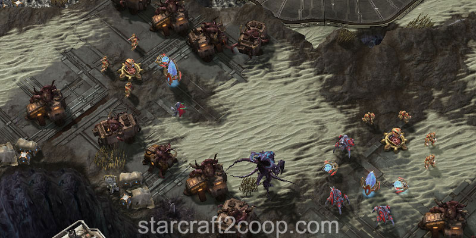
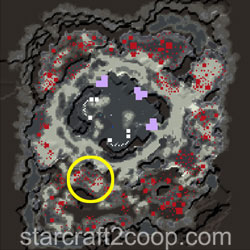
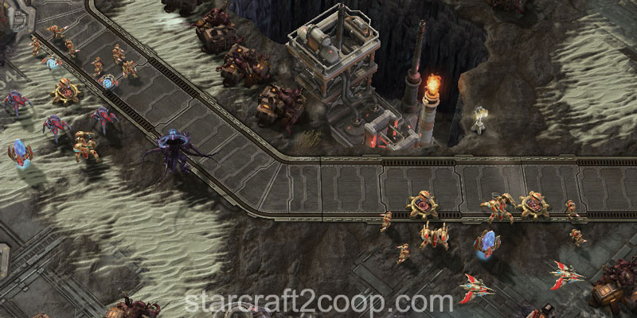
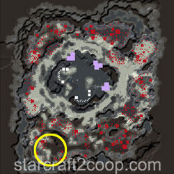
Day and Night Cycle Information
Days are always 3:30 long, whereas nights are 4:00 long. The first few day/night cycles are shown below:
| Phase | Start | End |
|---|---|---|
| Day 1 | 0:00 | 3:30 |
| Night 1 | 3:30 | 7:30 |
| Day 2 | 7:30 | 11:00 |
| Night 2 | 11:00 | 15:00 |
| Day 3 | 15:00 | 18:30 |
| Night 3 | 18:30 | 22:30 |
During the day, no infested will spawn, making it easy to clear the infested buildings. There are a minimal number of enemy units defending the infested structures. Upon killing infested structures, a number of broodlings will spawn. This is dependent on the infested structure killed, as follows:
- Infested Biodome (1300 HP): 6 broodlings
- All Other Infested (500 HP): 3 broodlings
At the start of each day, a number of hybrids will be added to uncleared areas of the map to help defend. These are in addition to the starting hybrids on the map. The number of hybrids added is listed below. Note that Light Hybrids are Hybrid Reavers and Hybrid Destroyers. Heavy Hybrids are Hybrid Behemoths and Hybrid Dominators.
| Day | Light Hybrid Added | Heavy Hybrid Added |
|---|---|---|
| 1 | 0 | 0 |
| 2 | 2 | 0 |
| 3 | 2 | 1 |
| 4 | 4 | 1 |
| 5+ | 5 | 2 |
The types of Hybrids added will depend on the enemy race you are fighting. This is summarized below:
| Race | Light Hybrid | Heavy Hybrid |
|---|---|---|
| Protoss | Hybrid Destroyer | Hybrid Dominator |
| Terran | Hybrid Reaver | Hybrid Dominator |
| Zerg | Hybrid Reaver | Hybrid Behemoth |
The night is very different. During the night, you will be attacked by a constant stream of Infested Terrans, Infested Marines and Aberrations.
Infested units will only attack from certain positions, depending on the night. The below table lists the side attacked in the mission.
| Night | Side |
|---|---|
| 1 | South |
| 2 | South + North |
| 3+ | All four sides |
There are two different "groups" of infested units on the map. These groups are:
- Attack Waves: These are groups of infested units that will make aggressive pushes towards your base. The units that can be in the attack waves are:
- Infested Terrans
- Infested Marines
- Aberrations
- Noise: This is a constant spawn of infested units that move towards your base. The units that are part of the noise are:
- Infested Terrans
- Infested Marines
- Volatile Infested
- Aberrations
In general, it is very difficult to distinguish the attack waves from the noise, and hence, the attack wave compositions and timings are irrelevant as all entrances to your base need to be defended.
The spawning rate of the Noise infested units per second in each night is shown below.
| Night | Infested Terran | Infested Marine | Volatile Infested | Aberration |
|---|---|---|---|---|
| 1 | 0.91 | 0 | 0 | 0 |
| 2 | 0.32 | 0.63 | 0 | 0.1 |
| 3 | 0.32 | 0.48 | 0.16 | 0.20 |
| 4 | 0.32 | 0.63 | 0.32 | 0.38 |
| 5 | 0.32 | 0.63 | 0.63 | 0.57 |
| 6+ | 0.48 | 0.91 | 0.91 | 0.83 |
In addition to the standard infested units, you will also be attacked by Special infested. The two out of the four infested units below are picked randomly. The first is introduced to you during the first night and the second during the second night.
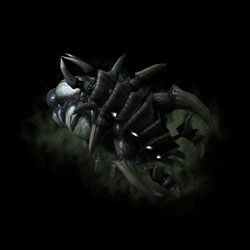
The Choker can permanently stun-lock targeted units until they die. Units with the Frenzied buff are immune (e.g. Brutalisks, Odin, Ultralisks). It poses a huge threat for heroes. However, the Choker can only stun-lock one heroic unit. So, if multiple heroes are present nearby, they will be able to deal with the Choker. The Choker can target at maximum 5 units at a time.
It is usually recommended to send some low-cost units into the Choker's range, before targeting it with more expensive units. Mobility abilities can be used to break free of a Choker stun. These include:
- Artanis' Guardian Shell
- Fenix's Cybros Arbiter Recall
- Nova's Tactical Airlift
- Tychus' Medivac Transport
- Vorazun's Dark Pylon Recall
- Vorazun's Emergency Recall
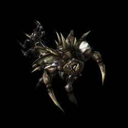
The Hunterling can jump over cliffs and reach your mineral line without going through the entrances to your base. This is a particular problem if you are playing as Player 1 on Night#1. One solution is to block the high ground to the left of the top-left barrier with a small 2x2 structure. Such structures include Pylons, Supply Depots, Spore/Spine crawlers. You will need to get a worker there, which can be done by using a transport.
Its jump attack can stun units for 5 seconds. Mobility abilities can be used to break free of a Hunterling stun. These include:
- Fenix's Cybros Arbiter Recall
- Nova's Tactical Airlift
- Tychus' Medivac Transport
- Vorazun's Dark Pylon Recall
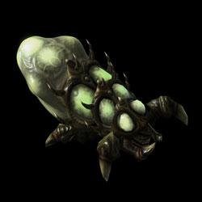
The Kaboomer explodes on death, dealing damage to all enemies around it. It also has a constant AoE attack that can kill low-HP targets quickly. It deals double damage to structures.
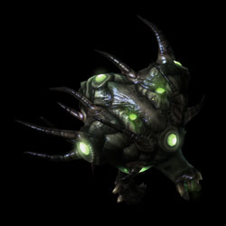
The Spotter is the only flying Special Infested unit. It can disable pylons, turrets and bunkers, making it extremely dangerous unless dealt with quickly. A single Spotter will disable two structures.
Additionally, it provides an aura buff that increases movement speed of nearby infested by 1 and life regen by 2.
Additionally, on Night #3 and future nights, you will have to fight an additional threat, either a Nydus Network or a Stank.
The Nydus Networks behave like any other Nydus threat in the game. They should be killed quickly, otherwise they will unload enemy units (a 3 Strength/3 Tech Level Enemy composition wave) that will attack you.
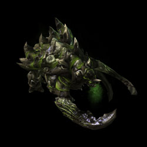
The Stank is a powerful ultralisk-like unit that requires the full might of an army to take down. A Stank does not burn during the day, so you will have to kill it, or it can destroy your entire base within minutes.
The number of Special Infested units that spawn per night is shown below. Timings are somewhat unpredictable due to different spawn locations, and order-based spawn timings and will therefore not be listed.
| Night | Chokers | Hunterlings | Kaboomers | Spotters | Stanks | Max Concurrent Nydus Worms |
|---|---|---|---|---|---|---|
| 1 | 3 | 11 | 3 | 3 | 0 | 0 |
| 2 | 10 | 32 | 14 | 11 | 0 | 0 |
| 3 | 14 | 30 | 15 | 15 | 1 | 1 |
| 4 | 16 | 18 | 12 | 12 | 2 | 4 |
| 5 | 19 | 36 | 19 | 19 | 4 | 5 |
| 6+ | 32 | 66 | 32 | 40 | 11 | 6 |
You can attack buildings at night. However, they will spawn infested units shown below depending on the night. Each building has a 30-second cooldown before it can spawn the set again.
| Night | Spawn |
|---|---|
| 1 | 6 Infested Terrans |
| 2,3 | 6 Infested Terrans 4 Infested Marines |
| 4,5 | 6 Infested Terrans 9 Infested Marines 3 Volatile Infested 2 Aberrations |
| 6+ | 6 Infested Terrans 12 Infested Marines 3 Volatile Infested 3 Aberrations |
Completing the Bonus Objective
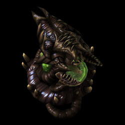
The bonus objective requires you to kill the Virophage which appears at night, starting from the third night.
The Virophage can spawn in one of the locations shown below.
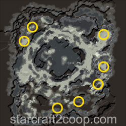
The position the Virophage will spawn is based on the number of infested structures in that particular area. The Virophage will spawn in the area with the least infested structures. The game checks the areas from the top left, clockwise, prioritizing later areas. So, if you have cleared the South position of the map, the Virophage will always spawn there.
Timings
Note: Information on Tech and Strength levels can be found on the Enemy Compositions page.
Attack waves always spawn when there is 1:00 left on the night clock. Additionally, they will always come in transports. The side they come from is randomized. The attack wave Tech Levels and Strength Levels for each night are shown below.
| Night | Tech Level | Strength Level |
|---|---|---|
| 1 | 0 | 0 |
| 2 | 2 | 2 |
| 3 | 3 | 3 |
| 4 | 4 | 4 |
| 5+ | 4 | 4 |
Spawn Points
The Noise infested spawn randomly from any infested structure on the map. So, if you have cleared out a portion of the map, you will need less defenses on that side to deal with infested. Remember that there are still infested attack waves to deal with.
Attack waves spawn near the four corners of the map and rally to a point on the map.
Mission Tips
- It is often possible to clear the mission before Night #3, completely avoiding the need to defend more than two entrances, and dealing with Nydus Worms or Stanks.
- Both players should aim to push and clear the mission in order to clear the mission as soon as possible.
- Hunterlings like to target mineral lines, so ensure you have appropriate defenses in the mineral line if you have Hunterlings as the Special Infested.
- Engage Chokers with disposable units first, so it chokes them, before you engage with more expensive/heroic units.
- If playing a Protoss commander that has Pylons, power buildings with multiple Pylons to prevent Spotters from disabling an Artosis pylon and therefore your entire production.
- If playing a Protoss commander that has Pylons, place Pylons in front of ally static defense to bait Spotter stasis casts.
Commander-specific Tips
- Abathur: Infested Terrans do not drop biomass. If you can defend well, place your Toxic Nests behind your defensive force and only lure Aberrations and Special Infested units towards them.
- Dehaka: As soon as Dehaka spawns, send him West to the small enemy camp there to gain essence, then move Southwards up the ramp to get more essence before the first night.
- Fenix: While massing a single unit is usually a bad strategy, mass Scouts with upgrades can make short work of infested units. Split your scouts into two or three squadrons to clear during the day.
- Han & Horner: Strike Fighter Platforms with Napalm upgrade can be used to destroy infested structures during the night.
- Han & Horner: When using Strike Fighter Platforms, use the Area Size mastery so that you can target in between two infested buildings. This will destroy two infested buildings with one strike.
- Karax: An upgraded Solar Lance can be used to burn down lines of infested buildings.
- Karax: Use your Spear of Adun abilities to kill air units in this mission, instead of building anti-air units.
- Nova: Use your Ravens' Railgun turrets to destroy infested structures while your army moves on to clear enemy forces.
- Stukov: Use Infest Structure on Nydus Worms, select Broodlings and attack the already-infested worms to clear them.
- Swann: Swann can clear this mission using his drill (targeting Infested Structures with vision provided with a Hercules), while still defending during the night. For efficient calldown use, check the Swann Commander Page.
- Tychus: Use Sirius' turrets to destroy infested structures while your outlaws move on to clear ahead.
- Zagara: Zagara with mass fully upgraded zerglings can clear the map before the third night if you use Frenzy and Roach Drops efficiently.
- Zeratul: Use Shaded Cannons to clear buildings while your army moves on to clear enemy forces.
- Zeratul: Zeratul's Purity of Will passive allows him to escape from a Choker stun when the immunity buff is applied to him.